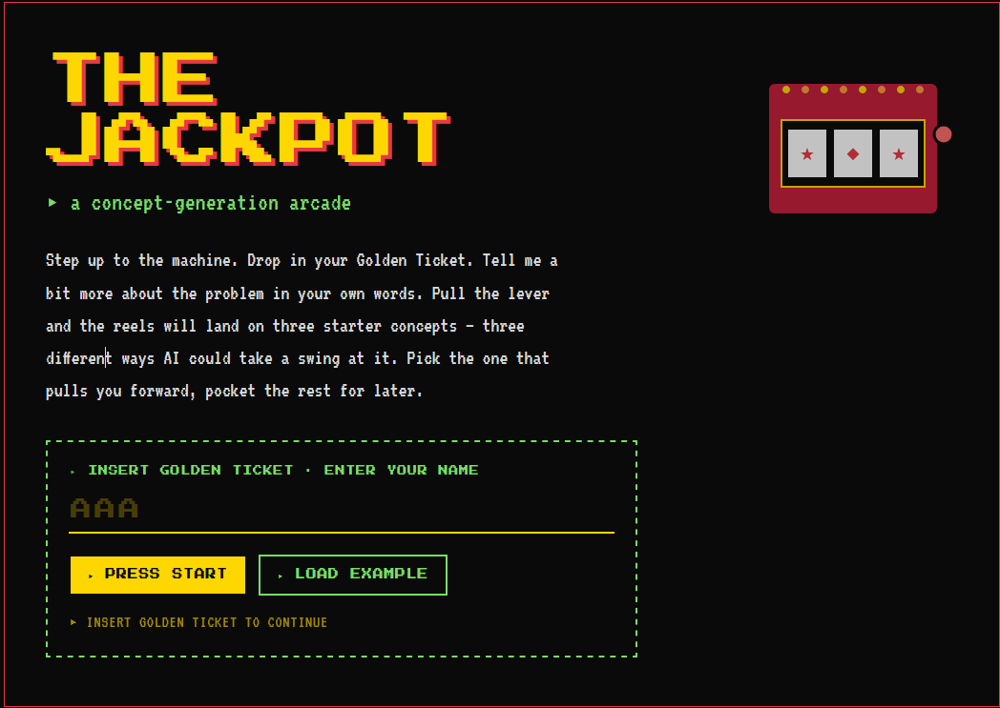

A billion-dollar company was just built by one person using AI.
Yet most teams are using AI to transform their industry summarize meetings.
That’s the gap The Counter helps close.
This gap exists because
learning what AI can do
is not the same as knowing
how to work with it.
AI Literacy
trainings are what organizations invest in today.
AI Fluency
is what we develop directly with your teams in their real work.
- ✓ Knowledge of AI tools
- ✓ Ability to prompt & use AI
- ✓ Faster on existing tasks
- — Applied to their actual role
- — New ways of thinking & working
- — Solutions that didn't exist before
- — Capability that sticks & compounds
- ✓ Knowledge of AI tools
- ✓ Ability to prompt & use AI
- ✓ Faster on existing tasks
- ✓ Applied to their actual role
- ✓ New ways of thinking & working
- ✓ Solutions that didn't exist before
- ✓ Capability that sticks & compounds
Your fast track to AI fluency.
We guide a cohort from your team through a hands-on experience designed to solve problems and priorities they are already working on over four to six weeks. In the process, they develop the mindsets, behaviors, and skills to think and work with AI in practice — not just learn about it in theory.
Over time, working and thinking with AI becomes more fluid, instinctual, and eventually second nature to their ways of working.
The Counter works alongside what you already have.
Your teams practice in a safe sandbox and build real AI fluency without creating conflict with your existing enterprise AI strategy, tools, LLMs, or governance.
What is the Counter Experience?
We partner with you to shape the right cohort and set the experience up for a strong start.
Then, we work with each person to choose and clarify a problem they’re already working on as the focus for their experience.
One by one, we coach them to think and work with AI to turn that problem into a working prototype in hours.

They take the prototype into their real work — test, learn, and iterate until it works in practice.
By the end, they have real solutions in hand — and the confidence to keep thinking and working with AI more fluently on their own.
And you have the PROOF you need to scale it further.
The Counter produces outcomes traditional corporate programs rarely can because it is science backed by design and built around applied practice, curiosity, playfulness, and safe experimentation.
AI fluent
The cohort builds the skills, mindsets, and confidence to think and work with AI more instinctively in their day-to-day work.
Real solutions
The cohort leaves with prototypes and solutions that solve the problems they were working on.
New possibilities
The organization begins to uncover opportunities, solutions, and forms of value they would not have reached through traditional ways of working.
Proof to scale
You come away with the proof points needed to bring other leaders along and make the case to scale AI fluency more broadly.
What it looks like when it's real.
A fraud dispute analyst had everything she needed to make the call, just not in one place.
Maya was spending too much time hunting through different systems to piece together what happened before she could even begin reviewing the dispute. She created a prototype that pulled the relevant information into one place, highlighted contradictions, separated confirmed facts from unsupported claims, and gave her a clearer starting point for making the decision.
- EMV chip-read + first-attempt PIN at Orlando terminal
- Billing address Minneapolis; transaction geo Orlando
- Long tenure, no prior disputes on record
- Whether CH was in Orlando on transaction date
- Whether camera footage identifies this CH
A marketer already had the strategy in her head, but it still took weeks and an outside agency to turn it into something the business could use.
Rachel knew the outcomes data, approved claims, and strategic direction better than anyone. She created a prototype that pulled those inputs together, shaped them into clear concept territories, kept each one traceable to sources, and made them ready for review in a fraction of the usual time.
An R&D scientist had years of formulation data that could have made experimentation much faster, but it was buried in files she never had time to use.
Sarah had a decade of test results across polymer absorption, surfactant levels, and particle size, along with a hunch about how those variables might be interacting. She created a prototype that made her past experiments searchable, surfaced patterns across prior test cycles, and let her run digital scenarios to predict likely performance before moving into physical testing. Instead of relying only on slower lab cycles, she had a faster way to focus where to experiment next.
Two people tired of AI workshops that only teach prompting.
We've spent years watching companies spend millions on AI initiatives that go nowhere. The knowledge and the talking points, what you should teach about AI, has been hammered home. But no one has taken the time to sit with people and show them what's possible with the problems they face every day.
That's The Counter. It's founded on the rare belief in corporate life that people are not the problem to be managed through this process — they're the answer.
↑ honestly that's the whole thingDrew Castellaw
Leads the engagements, builds the prototypes, works directly with your teams. Background in building AI-powered tools for enterprise clients.
Fred Sham
Handles the relationship side — scoping, alignment with leadership, making sure the engagement connects to business priorities.
Tell me and I forget.
Teach me and I remember.
Involve me and I learn.
Often attributed to Benjamin Franklin. Probably not actually him. Nonetheless — the principle behind our approach.
Start a conversation →